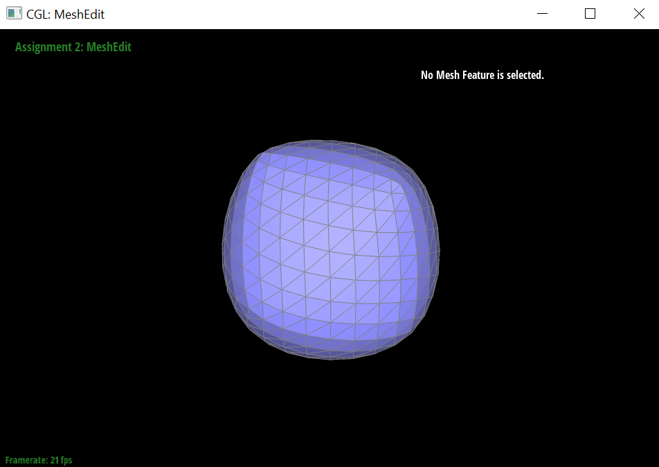

|

|

|

|
In this project, our main approach was to have a thorough understanding of the algorithms for each task, so that we could just translate our conceptual understanding into code. When implementing, we carefully thought about each step of the algorithms and also made sure we were updating everything, such as pointers, positions, booleans like isNew, etc. Most of the parts were solved smoothly, but we were a bit stuck for Task 6, as the vertices appeared to be in the wrong positions. We solved this problem by commenting out certain parts of the code, like flipping, updating positions, splitting, to see where exactly the error lied. Then, we carefully thought about whether we were updating all the pointers and values that we needed to update.
Overall, the assignment was very interesting, especially when we were able to see the final results. Our favorite part was seeing the loop subdivision, because it was very satisfying to see it working properly. We learned about many algorithms, like de Casteljau, loop subdivision, etc., and how to implement them. We also learned the importance of writing neat and organized code and to think thoroughly about what needs to be updated, since missing a single update of a value can completely change the appearance of the mesh.
de Casteljau's algorithm uses linear interpolation to recursively insert points on each edge. The intermediate points connect into intermediate edges and we continue until reaching one point. This then defines the Bezier curve. We implemented one step of the algorithm, iterating through the given n points and calculating n - 1 intermediate points by lerping each pair of consecutive control points.
Screenshots of our own Bezier curve at each level of evaluation, the final curve, and a slightly different curve with shifted control points and modified t:
|
|
|
|
|
|
de Casteljau's algorithm extends to Bezier surfaces because we evaluate multiple Beizer curves in u that then define one moving curve on the surface. For each row of control points, parameterized by u, we calculated the interpolated 3d point using de Casteljau’s. Then, we took this vector of points and evaluated them into the final point using de Casteljau’s, parameterized by v.
Screenshot of bez/teapot.bez:

For each vertex, we calculated the area-weighted vertex normal by iterating through the neighboring (triangle)faces of the vertex. In this iteration, we summed together all the normals of each face, which were also normalized by their area. Finally, we took this sum of face normals and normalized it, resulting in the area-weighted vertex normal.
Screenshots of dae/teapot.dae with and without vector normals:

We listed out every element in the mesh, setting the HalfedgeIters, VertexIters, EdgeIters, and FaceIters based on the passed in EdgeIter. We then set the corresponding halfedge pointers for every VertexIter, EdgeIter, and FaceIter. We then used setNeighbors for every halfedge besides the outer 4 to reflect the changes of the flip. We followed numberings based off of a diagram to ensure all the pointers were correctly assigned. We also used isBoundary() to make sure we didn’t flip boundary edges.
Screenshots of dae/teapot.dae before and after some edge flips:


We listed out every element in the mesh, setting the HalfedgeIters, VertexIters, EdgeIters, and FaceIters based on the passed in EdgeIter. We also created new mesh elements with newHalfedge(), newVertex(), newEdge(), and newFace(). We set the position of the new vertex to be the midpoint of the original edge. We then set the corresponding halfedge pointers for every VertexIter, EdgeIter, and FaceIter. We then used setNeighbors for every halfedge besides the outer 4 to reflect the changes of the split. We followed numberings based off of a diagram to ensure all the pointers were correctly assigned. We also used isBoundary() to avoid splitting boundary edges.
Screenshots of dae/bean.dae before and after some edge splits:
Screenshots of dae/bean.dae before and after a combination of both edge splits and edge flips:
We implemented the subdivision by first iterating through all the vertices and then calculating the new position of each vertex of the original mesh. This was done by calculating a weighted average on the positions of the neighboring vertices. Next, we calculated the new vertex positions associated with the original edges, using the new vertex weighted sum formula. Then, we split every edge of the original mesh and we also set the isNew for the split edges. Then, in order to make the the 4-1 subdivision, we used our flipEdge method from Part 4 to flip every split edge connecting a new and old vertex. Finally, we updated all of the vertex positions to their new positions. We used a debugging trick when our vertices seemed to be in the wrong positions. First, we commented out the vertex position updating code to see if the subdivision was correct without the position updates. It was still not correct, so then we tried commenting out the code for flipping the split edges. It was correct before that step, so then we discovered that the problem was with the flipping. The cube seems to be asymmetrical, because each original face is two triangles making up a square, or a square with a diagonal. Depending on which vertices the diagonal is between, it is possible for some vertices to have different degrees. The different degrees in the vertex make the weight calculations vary, so the positions will be asymmetric. Since there are 12 edges of the cube and each edge neighbors 2 vertices, and there are 6 diagonals and each neighbors 2 vertices, the total sum of all vertex degrees is 12 * 2 + 6 * 2 = 36. Thus we can’t make it completely symmetrical for all 8 vertices, but we can try making it a little better. The default is some vertices have 3, 4, 5, or 6 degrees, so very asymmetric. If we flip the edges so the vertices only can have either 4 or 5 degrees, it will be more symmetrical.
Screenshots of of subdivided teapot, cube, icosahedron, torus, respectively

Progression of cube subdivision
More symmetrical subdivided cube, achieved through preprocessing
https://cal-cs184-student.github.io/sp22-project-webpages-jumony/proj2/index.html